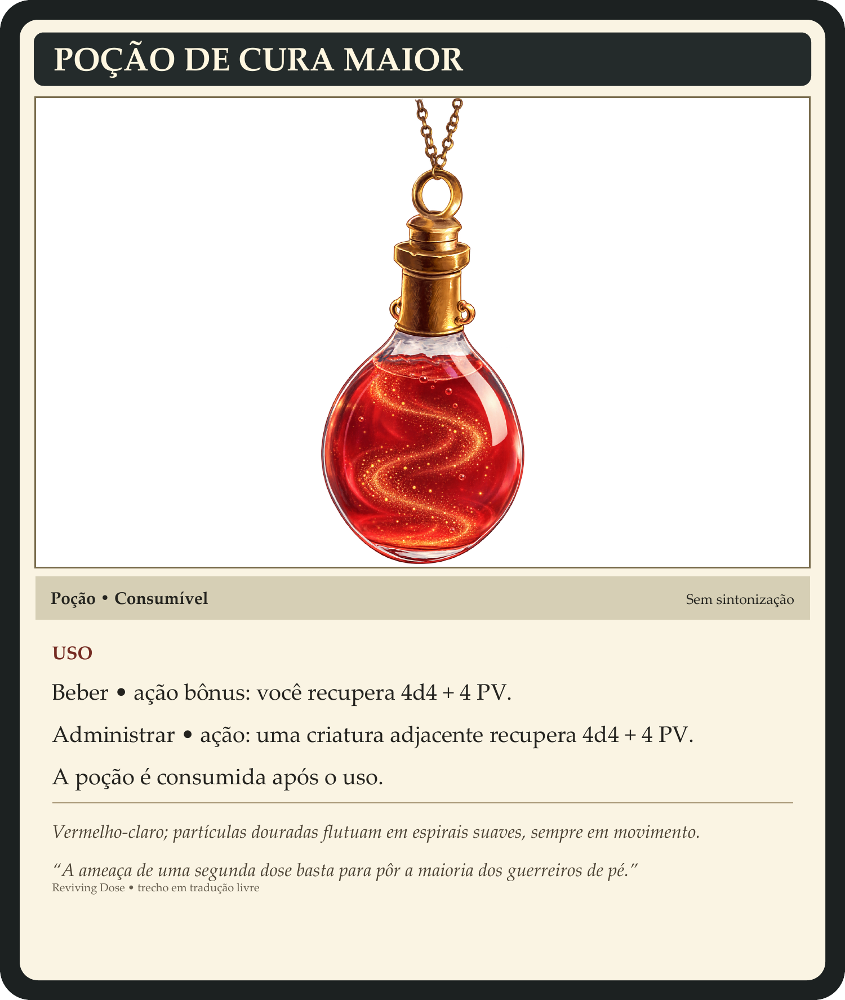
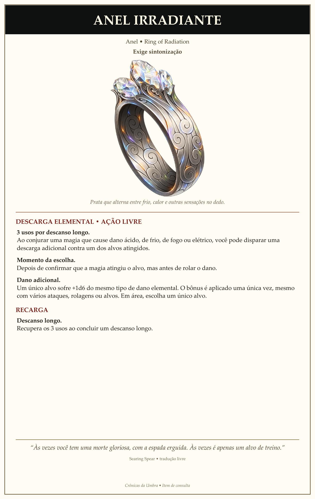
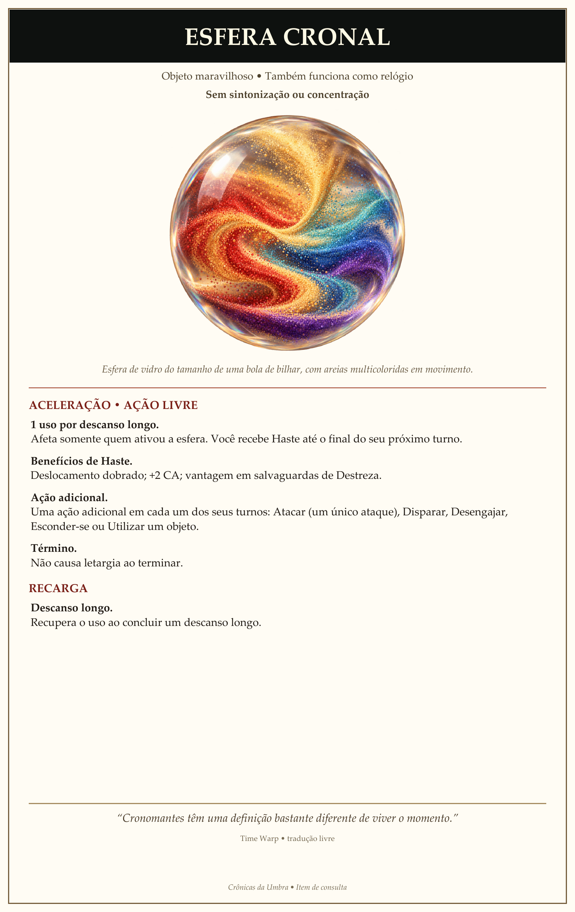
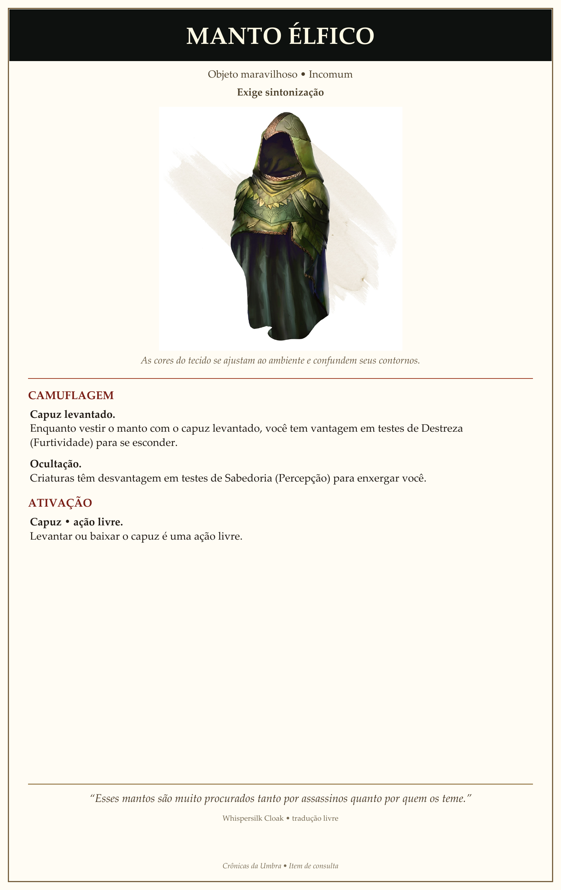
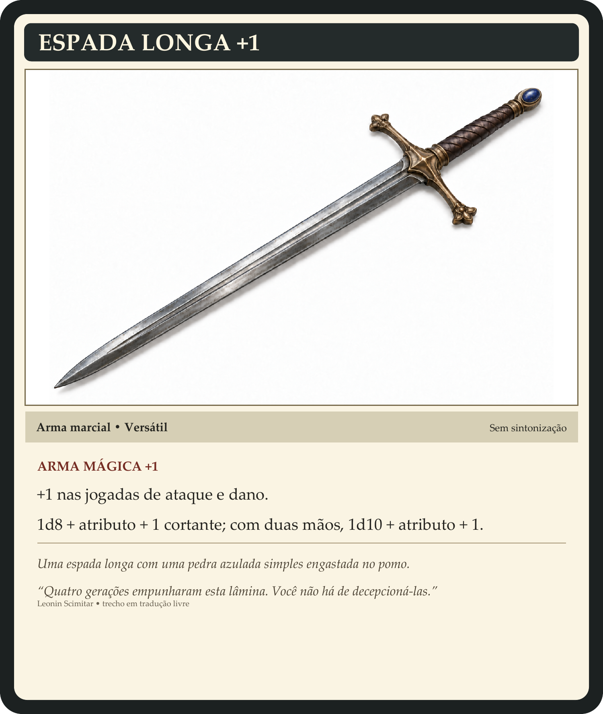
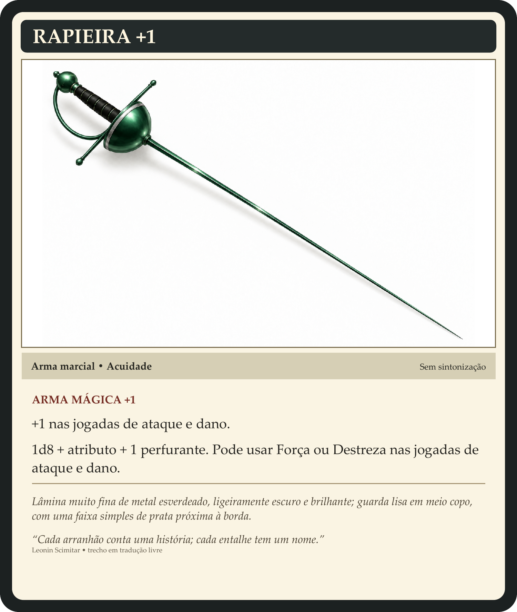
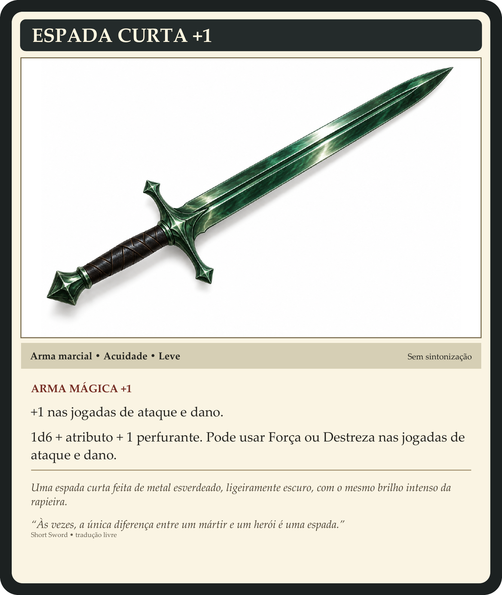
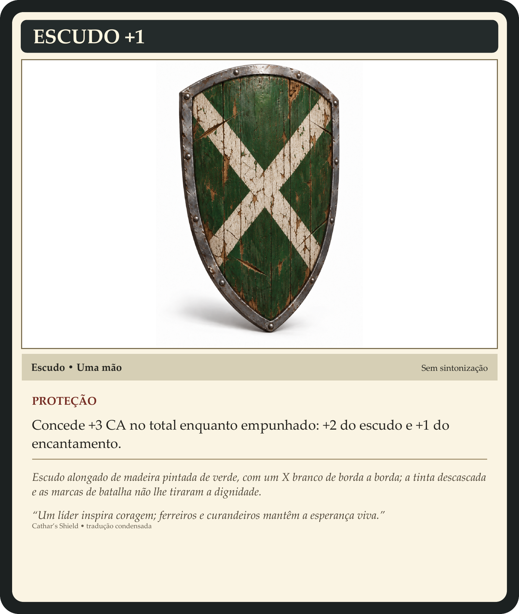

Itens recuperados e disponíveis para consulta, com quantidades e custódia atual.
Itens com card
| Item | Quantidade | Com quem está / onde está |
|---|---|---|
Poção de Cura Maior POÇÃO DE CURA MAIOR Poção • Consumível Sem sintonização Vermelho-claro; partículas douradas flutuam em espirais suaves, sempre em movimento. USO Beber • ação bônus Você recupera 4d4 + 4 PV. Administrar • ação Uma criatura adjacente recupera 4d4 + 4 PV. Consumível A poção é consumida após o uso. A ameaça de uma segunda dose basta para pôr a maioria dos guerreiros de pé. | 5 | Arsenal do Templo: 5 |
Anel Irradiante ANEL IRRADIANTE Anel • Ring of Radiation Exige sintonização Prata que alterna entre frio, calor e outras sensações no dedo. DESCARGA ELEMENTAL • AÇÃO LIVRE 3 usos por descanso longo Ao conjurar uma magia que cause dano ácido, de frio, de fogo ou elétrico, você pode disparar uma descarga adicional contra um dos alvos atingidos. Momento da escolha Depois de confirmar que a magia atingiu o alvo, mas antes de rolar o dano. Dano adicional Um único alvo sofre +1d6 do mesmo tipo de dano elemental. O bônus é aplicado uma única vez, mesmo com vários ataques, rolagens ou alvos. Em área, escolha um único alvo. RECARGA Descanso longo Recupera os 3 usos ao concluir um descanso longo. Às vezes você tem uma morte gloriosa, com a espada erguida. Às vezes é apenas um alvo de treino. | 1 | Juliana: 1 |
Esfera Cronal ESFERA CRONAL Objeto maravilhoso • Também funciona como relógio Sem sintonização ou concentração Esfera de vidro do tamanho de uma bola de bilhar, com areias multicoloridas em movimento. ACELERAÇÃO • AÇÃO LIVRE 1 uso por descanso longo Afeta somente quem ativou a esfera. Você recebe Haste até o final do seu próximo turno. Benefícios de Haste Deslocamento dobrado; +2 CA; vantagem em salvaguardas de Destreza. Ação adicional Uma ação adicional em cada um dos seus turnos: Atacar (um único ataque), Disparar, Desengajar, Esconder-se ou Utilizar um objeto. Término Não causa letargia ao terminar. RECARGA Descanso longo Recupera o uso ao concluir um descanso longo. Cronomantes têm uma definição bastante diferente de viver o momento. | 1 | Arsenal do Templo: 1 |
Manto Élfico MANTO ÉLFICO Objeto maravilhoso • Incomum Exige sintonização As cores do tecido se ajustam ao ambiente e confundem seus contornos. CAMUFLAGEM Capuz levantado Enquanto vestir o manto com o capuz levantado, você tem vantagem em testes de Destreza (Furtividade) para se esconder. Ocultação Criaturas têm desvantagem em testes de Sabedoria (Percepção) para enxergar você. ATIVAÇÃO Capuz • ação livre Levantar ou baixar o capuz é uma ação livre. Esses mantos são muito procurados tanto por assassinos quanto por quem os teme. | 1 | Arsenal do Templo: 1 |
Espada longa +1 ESPADA LONGA +1 Uma espada longa com uma pedra azulada simples engastada no pomo. Sem sintonização. +1 nas jogadas de ataque e dano. 1d8 + atributo +1 cortante; versátil 1d10 com duas mãos. Quatro gerações empunharam esta lâmina. Você não há de decepcioná-las. | 1 | Arsenal do Templo: 1 |
Rapieira +1 RAPIEIRA +1 Lâmina muito fina de metal esverdeado, ligeiramente escuro e brilhante; guarda lisa em meio copo, com uma faixa simples de prata próxima à borda. Sem sintonização. +1 nas jogadas de ataque e dano. 1d8 + atributo +1 perfurante; acuidade: Força ou Destreza. Cada arranhão conta uma história; cada entalhe tem um nome. | 1 | Juliana: 1 |
Espada curta +1 ESPADA CURTA +1 Uma espada curta feita de metal esverdeado, ligeiramente escuro, com o mesmo brilho intenso da rapieira. Sem sintonização. +1 nas jogadas de ataque e dano. 1d6 + atributo +1 perfurante; acuidade e leve. Às vezes, a única diferença entre um mártir e um herói é uma espada. | 1 | Jeremias: 1 |
Escudo +1 ESCUDO +1 Escudo alongado de madeira pintada de verde, com um X branco de borda a borda; a tinta descascada e as marcas de batalha não lhe tiraram a dignidade. Sem sintonização. +3 CA no total enquanto empunhado: +2 do escudo e +1 do encantamento. Um líder inspira coragem; ferreiros e curandeiros mantêm a esperança viva. | 1 | Valerion Solis: 1 |
Materiais
| Objeto | Quantidade | Com quem está / onde está | Consulta |
|---|---|---|---|
| Reforço elemental | 4 | Jeremias | Reforços para armadura; elementos individuais a definir. |
| Lata de tinta com textura de pedra | 8 | Juliana | Tinta que reproduz textura de pedra; sem bônus mecânico definido. |
| Pedras ofuscantes | 3 | Arsenal do Templo | Pequenas pedras claras que explodem em luz ao impacto. Ação para lançar contra uma criatura a até 6 m; Constituição CD 13 ou fica Cega até o início do próximo turno de quem lançou. Uso único; nenhuma consumida. |
Os recursos da base estão na página Templo.